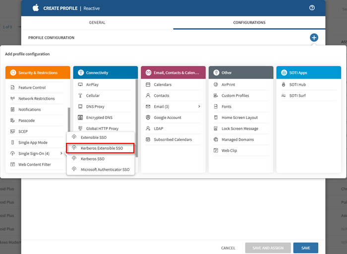

Procedural writing · 2025-02-21 · trunk
Two configuration tables became a thirteen-command procedure with a screenshot, configuration sequence, CSV guidance and a result.
Counts describe source structure, including commands in substeps. More elements do not by themselves prove better usability.
Before · parent revision
Kerberos Extensible Single Sign-on (iOS)
Kerberos Extensible Single Sign-on (SSO) allows users to authenticate once and access multiple resources without having to re-enter their credentials.
Kerberos Extensible SSO authentication features include mutual authentication, ticket-based authentication, and encryption of authentication messages. These features help to prevent security threats and protect from credential theft and other vulnerabilities.
Do this when:
- Creating a Profile
- Editing a Profile
Details
Extension Data
After · committed revision
Kerberos Extensible Single Sign-On (SSO) | iOS/ Shared iPad User
About this task
Kerberos Extensible Single Sign-On (SSO) enables users to authenticate once and access resources without having to re-enter their credentials. Kerberos Extensible SSO authentication features include mutual authentication, ticket-based authentication, and encryption of authentication messages. These features help to prevent security threats and protect from credential theft and other vulnerabilities.Procedure
- Create/ edit a Reactive iOS/ Shared iPad User profile and add the Kerberos Extensible SSO configuration from the Security & Restrictions configurations list.

Selecting the Kerberos SSO profile configuration in a Reactive iOS profile. - Enter the IP address or hostname of the domain/ administrative network partition that shares a common security policy and authentication database in the Realm field.
- Select (Add) in the Add Host Names section to identify the host or domain names which the app extension can authenticate through.
- Enter the Principal Name without including the realm in the Principal Name field.
- Enter the URL of the Active Directory site used by the Kerberos extension in the Site Code field.
- Select the Public Key Cryptography for Initial Authentication (PKINIT) certificate for renewing the Kerberos credential from the Certificate list.
- Turn on Allow Automatic Login to enable automatic logins.
- Turn on Is Default Realm to set the specified realm as the default when configuring more than one Kerberos extensions.
- Turn on Require User Presence to ensure the user gives Touch ID, Face ID, or their passcode to access a key-chain entry.
- Turn on Use Site Auto-Discovery to enable the Kerberos extension to use Lightweight Directory Access Protocol (LDAP) and Domain Name Services (DNS) to determine its AD site name.
- Select (Add) in the Add Preferred KDCs section to identify each Key Distribution Center (Glossary) to handle Kerberos traffic.
- In the Add Credential Bundle ID ACL section, identify each bundled ID allowed to access the Ticket Granting Ticket (TGT) by selecting (Add).
- Save the configuration and assign the profile to your target devices.
Result
You have successfully configured a Kerberos Extensible SSO profile for your devices. The profile is now visible in the Profiles view.Highlighted changes
Green marks additions; red marks removals. Historical review comments are shown in amber. Colour is also supported by placement and strike-through.
Kerberos Extensible Single Sign-on (iOS)
Kerberos Extensible Single Sign-on (SSO) allows users to authenticate once and access multiple resources without having to re-enter their credentials.
Kerberos Extensible SSO authentication features include mutual authentication, ticket-based authentication, and encryption of authentication messages. These features help to prevent security threats and protect from credential theft and other vulnerabilities.
Do this when:
- Creating a Profile
- Editing a Profile
Details
Extension Data
Kerberos Extensible Single Sign-On (SSO) | iOS/ Shared iPad User
About this task
Kerberos Extensible Single Sign-On (SSO) enables users to authenticate once and access resources without having to re-enter their credentials. Kerberos Extensible SSO authentication features include mutual authentication, ticket-based authentication, and encryption of authentication messages. These features help to prevent security threats and protect from credential theft and other vulnerabilities.Procedure
- Enter the IP address or hostname of the domain/ administrative network partition that shares a common security policy and authentication database in the Realm field.
- Select (Add) in the Add Host Names section to identify the host or domain names which the app extension can authenticate through.
- Enter the Principal Name without including the realm in the Principal Name field.
- Enter the URL of the Active Directory site used by the Kerberos extension in the Site Code field.
- Select the Public Key Cryptography for Initial Authentication (PKINIT) certificate for renewing the Kerberos credential from the Certificate list.
- Turn on Allow Automatic Login to enable automatic logins.
- Turn on Is Default Realm to set the specified realm as the default when configuring more than one Kerberos extensions.
- Turn on Require User Presence to ensure the user gives Touch ID, Face ID, or their passcode to access a key-chain entry.
- Turn on Use Site Auto-Discovery to enable the Kerberos extension to use Lightweight Directory Access Protocol (LDAP) and Domain Name Services (DNS) to determine its AD site name.
- Select (Add) in the Add Preferred KDCs section to identify each Key Distribution Center (Glossary) to handle Kerberos traffic.
- In the Add Credential Bundle ID ACL section, identify each bundled ID allowed to access the Ticket Granting Ticket (TGT) by selecting (Add).
- Save the configuration and assign the profile to your target devices.
Result
You have successfully configured a Kerberos Extensible SSO profile for your devices. The profile is now visible in the Profiles view.WYSIWYG-style approximation using the SOTI diff renderer. This is not an Oxygen/DITA-OT build or a live help page. Keyrefs, conrefs, conditional content and related-link navigation may require the original publishing environment. Screenshots are extracted from the matching revision.